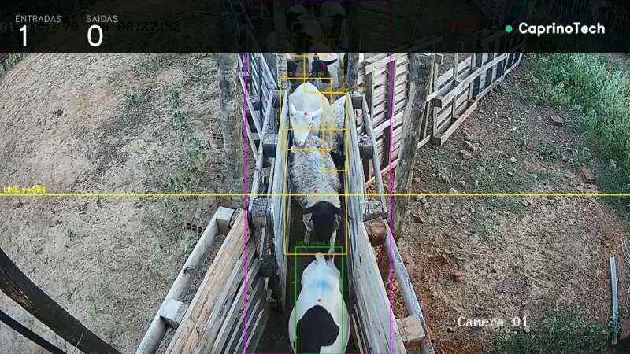
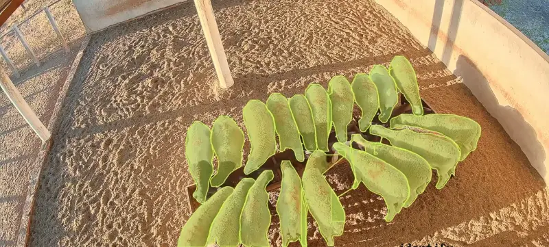

A contagem, medida em campo
Veja como a câmera registra a passagem dos animais e como a contagem é comparada com a revisão manual do vídeo.

Teste de campo · 08 a 10/06/2026
−2,6%da contagem ao vivo em relação à conferência manual
Conferência manual617 passagens
Contagem da câmera601 passagens
Em um teste com 617 passagens registradas à mão, a contagem ao vivo ficou 2,6% abaixo da conferência manual.
-
Contagem · medida em campo
Acompanhe a demonstração de contagem na passagem do rebanho.
97% das 1.113 passagens marcadas à mão foram encontradas ao reprocessar o vídeo.
-
Cocho · em teste
Estamos medindo a presença do lote no cocho ao longo dos tratos.
7 de 8 sessões com a hora do trato identificada a até 5 minutos.
-
Alimentação automatizada · em avaliação
Estamos avaliando como integrar o monitoramento a equipamentos de alimentação.
Uma pessoa aprova cada trato antes de o equipamento agir.
